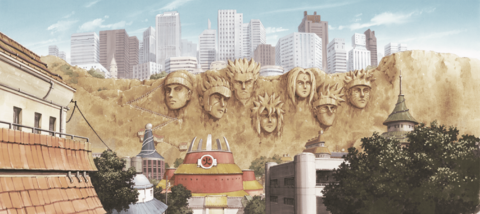

Le Monument des HOKAGE
Le Monument des Hokage (火影岩, Hokage-iwa, Signifiant littéralement : Rocher Hokage) est une montagne où les visages de tous les Hokage furent sculptés.
Dans la Partie I, Naruto Uzumaki peignit les visages des quatre Hokage, une autre plaisanterie de sa part. Il fut révélé qu'il envisageait de les surpasser, déclarant que son visage serait un jour aussi sur le monument. Au début de la série, le Monument avait les visages du Premier, du Deuxième, du Troisième et du Quatrième Hokage.
Pendant les 3 ans où Naruto s’entraîna avec Jiraya, le visage de la Cinquième Hokage fut ajouté à la montagne. Bien des années après la Quatrième Grande Guerre Shinobi les visages de Kakashi et de Naruto Uzumaki furent ajoutés au Monument après que tous deux devinrent Hokage à leur tour. Le fils de Naruto, Boruto Uzumaki, vandalisait continuellement les visages pour attirer l'attention sur lui.
Vers l’adolescence de Boruto, le monument fut détruit par Kawaki avec le village tout entier.
Le Monument fut important pendant lors de certaines parties de l'histoire, principalement en raison de son symbolisme :
👉🏽 Dans l'épisode « D'étranges visiteurs », les visages en pierre furent montrées, pour plaisanter, faisant des grimaces et le monument du Quatrième pinçant son nez, quand Naruto renversa un baril plein de lisier sur les espions en herbe Mondai et Potcha dans ce qu'il pensait être un entraînement de taijutsu.
👉🏽 Pendant qu'Orochimaru attaquait Konoha, les étudiants de l'académie et les villageois s'y cachèrent.
👉🏽 Confronté aux 11 de Konoha, Genno s'y cacha en menaçant de le faire écrouler pour détruire Konoha.
👉🏽 Pendant l'attaque de Pain à Konoha, et après l'utilisation du Shinra Tensei, la plupart du village fut détruit, mais le Monument Hokage supporta l'attaque de gravitation. Après l'observation du Monument Hokage, en étant debout à côté d'une terre désolée, Naruto comprit, au moment de son retour, que Konoha avait été détruit.
Petite infos croustillante le Monument Hokage s'inspire du Mont Rushmore où sont taillés les visages de quatre présidents des États-Unis.